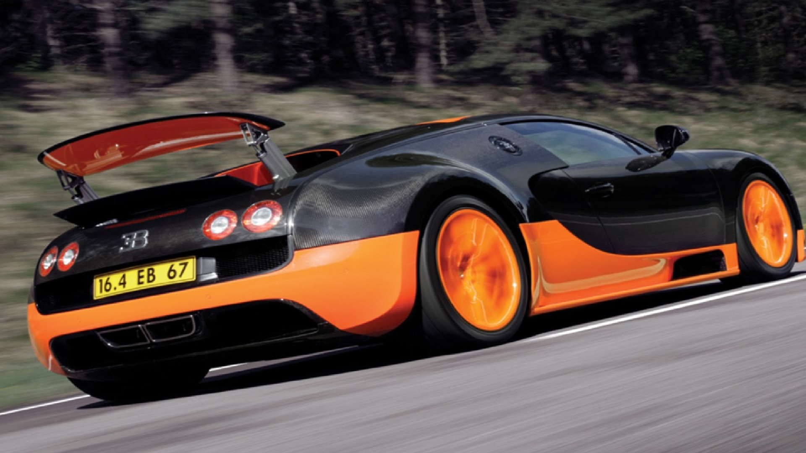

Bugatti Veyron EB 16.4


The Bugatti Veyron EB 16.4 is a mid-engine sports car, designed and developed in Germany by the Volkswagen Group and manufactured in Molsheim, France, by French automobile manufacturer Bugatti. It was named after the racing driver Pierre Veyron.
The original version has a top speed of 407 km/h (253 mph).